话不多说我们直接进入主题
申请完成之后我们找到开发下的基本配置
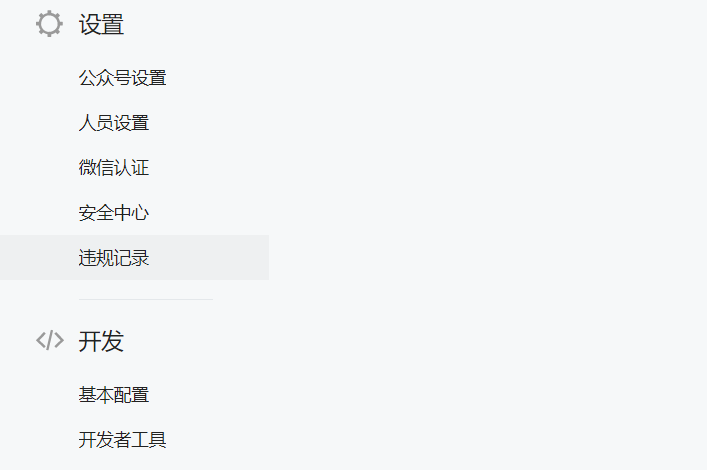
然后找到进行基本配置，我们需要一个url地址来验证，这里的地址必需要是外网，Token是我们任意填写然后在程序后端填写一致的token进行验证
这里的外网地址也就是域名我们一般的同学肯定是没有的辣，所以我们使用一个叫内网穿透的东东，我们先把网页停留在这个页面
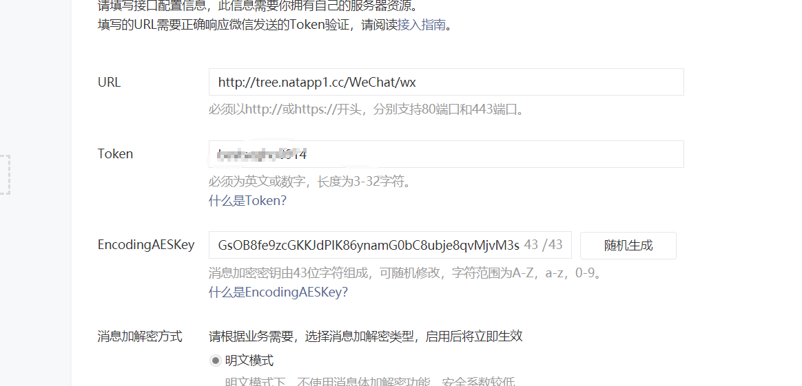
我们利用natapp实现内网穿透（个人推荐natapp ）
百度natapp:https://natapp.cn/注册一个账号下载natapp ，然后点击购买隧道有免费的
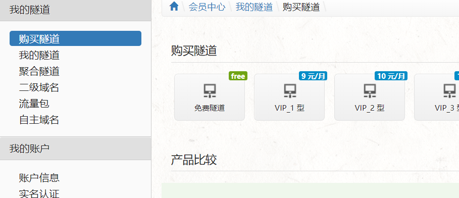
然后我们点击配置：
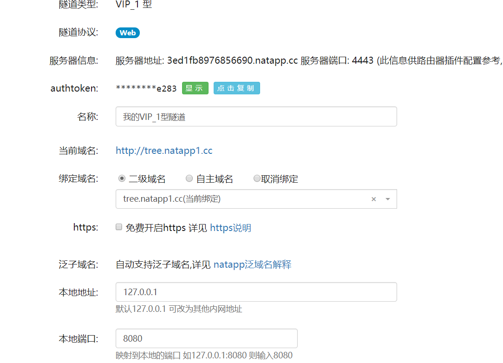
绑定域名我们自己任意填写，地址端口如图（tomcat端口是多少就是多少，地址为127.0.0.1）
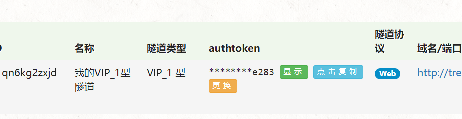
接着在我的隧道里面找到隧道复制authtoken。也就是上面我末尾为e283的，你的只有你能看到
通过在DOS窗口运行natapp -authtoken *******（*******代表你在natapp官网他给你的authtoken）指令得到如下图，启动tomcat之后此时我们就可以通过tree.natapp1.cc访问tomcat80端口了
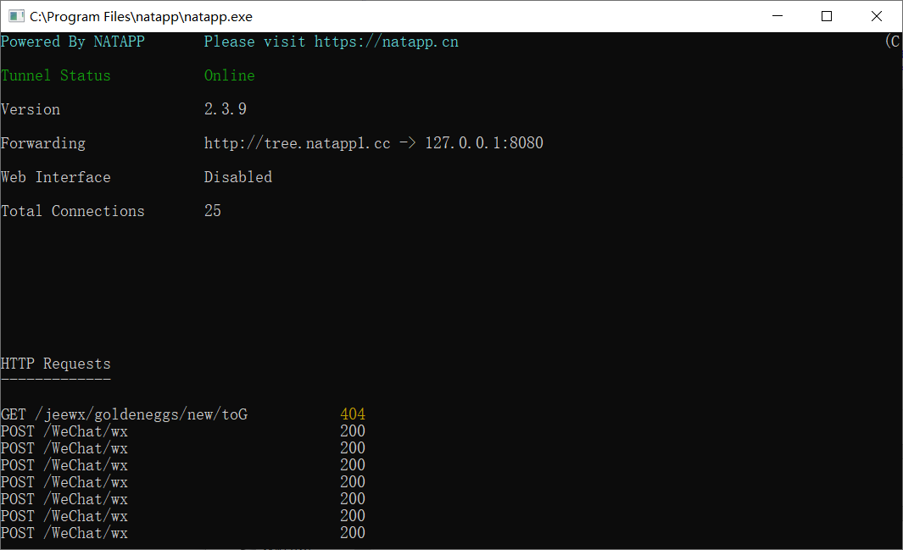
注意：这里我域名为tree.natapp1.cc，小伙伴们需要根据自己设置的域名来访问
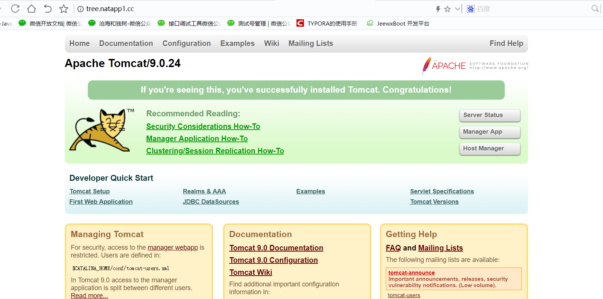
我们启动tomcat后能通过自己设置的域名（我的为tree.natapp1.cc）访问到tomcat的8080端口就说明成功了！
好了，我们开始创建项目；
注意：Wechat 本次需要的jar包有servlet-api.jar（因为我自己开发的过程中没有这个包是后面导入的所以提醒一下）
首先创建weixinServlet文件（在创建时我们可以修改访问地址如图）
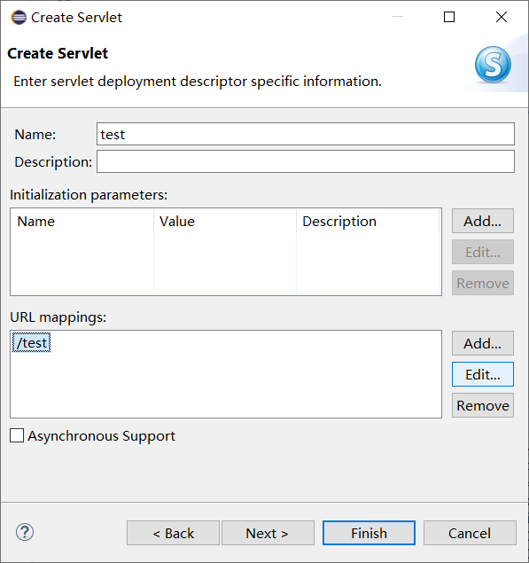
我们将URL mapping中的内容选中，然后点击Edit，改成任意自己想访问的就行了。
通过微信开发文档我们知道微信后台会通过GET方式发送signature，timestamp，nonce，echostr。
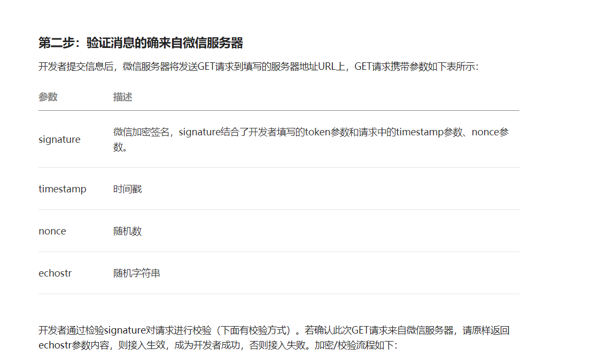
我们将token，timestamp，nonce进行字典序排序sha1加密后与signature进行对比。
通过则可以进行开发,其中涉及到的sha1加密算法及weixinServlet代码如下
这些可以在罗召勇老师的视频中有详细的讲解，链接我放在下面。
1 package servlet;
2
3 import java.io.IOException;
4 import java.io.PrintWriter;
5
6 import javax.servlet.ServletException;
7 import javax.servlet.ServletInputStream;
8 import javax.servlet.ServletOutputStream;
9 import javax.servlet.annotation.WebServlet;
10 import javax.servlet.http.HttpServlet;
11 import javax.servlet.http.HttpServletRequest;
12 import javax.servlet.http.HttpServletResponse;
13 import service.WxService;
14 /**
15 * Servlet implementation class weixinServlet
16 */
17 @WebServlet("/wx")
18 public class weixinServlet extends HttpServlet {
19 private static final long serialVersionUID = 1L;
20
21 /**
22 * Default constructor.
23 */
24 public weixinServlet() {
25 // TODO Auto-generated constructor stub
26 }
27 /**
28 * @see HttpServlet#doGet(HttpServletRequest request, HttpServletResponse response)
29 */
30 protected void doGet(HttpServletRequest request, HttpServletResponse response) throws ServletException, IOException {
31
32 String signature=request.getParameter("signature");
33 String timestamp=request.getParameter("timestamp");
34 String nonce=request.getParameter("nonce");
35 String echostr=request.getParameter("echostr");
36
37 if(WxService.check(timestamp,nonce,signature)) {
38 System.out.println("接入成功");
39 PrintWriter out=response.getWriter();
40 out.print(echostr);
41 out.flush();
42 out.close();
43 }
44 else {
45 System.out.println("失败");
46 }
47 }
48
49 /**
50 * @see HttpServlet#doPost(HttpServletRequest request, HttpServletResponse response)
51 */
52 protected void doPost(HttpServletRequest request, HttpServletResponse response) throws ServletException, IOException {
53 ServletInputStream is=request.getInputStream();
54 byte[] b=new byte[1024];
55 int len;
56 StringBuilder sb=new StringBuilder();
57 while((len=is.read(b))!=-1) {
58 sb.append(new String(b,0,len));
59 }
60 System.out.println(sb.toString());
61 }
62 }WxService.java如下
package service;
import java.security.MessageDigest;
import java.security.NoSuchAlgorithmException;
import java.util.Arrays;
public class WxService {
private static final String TOKEN="bestsegho0914";
public static boolean check(String timestamp,String nonce,String signature) {
String[] strs=new String[] {TOKEN,timestamp,nonce};
Arrays.sort(strs);
String str=strs[0]+strs[1]+strs[2];
String mysig=sha1(str);
System.out.println(mysig);
System.out.println(signature);
return mysig.equals(signature);
}
private static String sha1(String src) {
try {
MessageDigest md=MessageDigest.getInstance("sha1");
byte[] digest=md.digest(src.getBytes());
char[] chars= {'0','1','2','3','4','5','6','7','8','9','a','b','c','d','e','f'};
StringBuilder sb=new StringBuilder();
for (byte b:digest) {
sb.append(chars[(b>>4)&15]);
sb.append(chars[b&15]);
}
return sb.toString();
} catch (NoSuchAlgorithmException e) {
// TODO Auto-generated catch block
e.printStackTrace();
}
return null;
}
}
完成代码后我们点击运行 run as ->run on server，在tomcat上启动
然后回到我们微信公众号的后台，点击配置信息的修改按钮 点击提交 这里就会显示配置成功
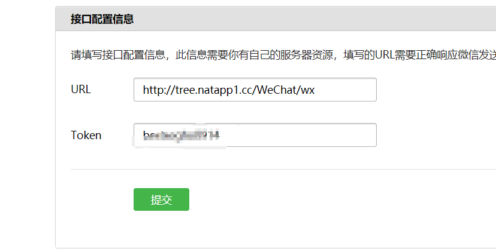
配置成功如图
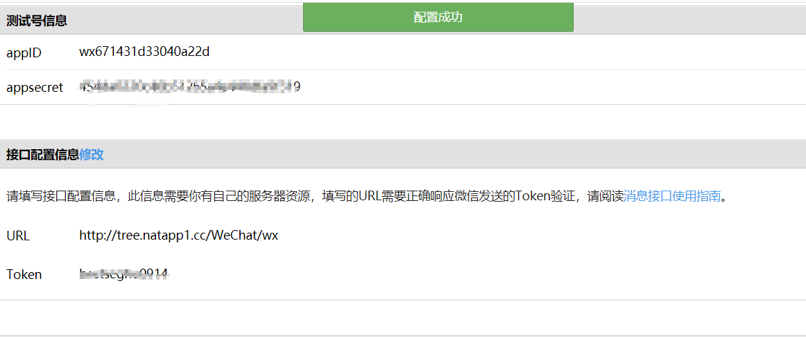
这时我们就可以开始进行公众号个人开发了。
本人也是初次进行微信的java开发，分享一些我正在看的资料希望能帮到想要学习微信开发的小伙伴们
罗召勇java开发：https://www.bilibili.com/video/av35042298
微信开发帮助文档:https://developers.weixin.qq.com/doc/offiaccount/Getting_Started/Overview.html
微信公众号测试号申请入口:https://mp.weixin.qq.com/debug/cgi-bin/sandbox?t=sandbox/login
ps：所有文章用于个人学习，仅代表个人理解。